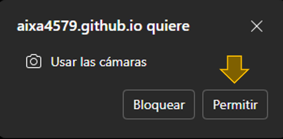

Manual de usuario
Esta aplicación web utiliza la cámara del dispositivo para reconocer las banderas de los equipos que participarán en el mundial, mostrando información y contenido visual en realidad aumentada relacionado al país detectado.
Permisos
Al iniciar la aplicación, el navegador solicitará permiso para acceder a la cámara. Es necesario aceptar este permiso para que la aplicación funcione correctamente.
Funciones
- Escaneo de banderas
- Creación de videos
- Trivia

Instrucciones para escaneo de banderas
- Acceda a la aplicación desde el navegador
- Permita el acceso a la cámara
- Apunte la cámara hacia una bandera válida
- Espere a que la detección sea estable
Banderas compatibles
- México
- Corea del Sur
- Japón